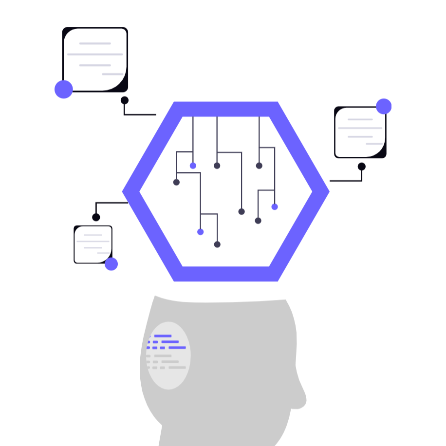

Berawal dari proyek militer AS untuk menciptakan jaringan komunikasi komputer yang kuat dan terdesentralisasi.
Adopsi "bahasa universal" komputer yang menyatukan berbagai jaringan berbeda menjadi satu internet global.
Tim Berners-Lee menciptakan WWW (World Wide Web), mengubah internet yang kaku menjadi halaman visual yang mudah diakses publik.

Internet berkembang menjadi pusat ekonomi, media sosial, dan infrastruktur utama yang menggerakkan kehidupan modern.
Nvidia, **** you!
-Linus Torvalds